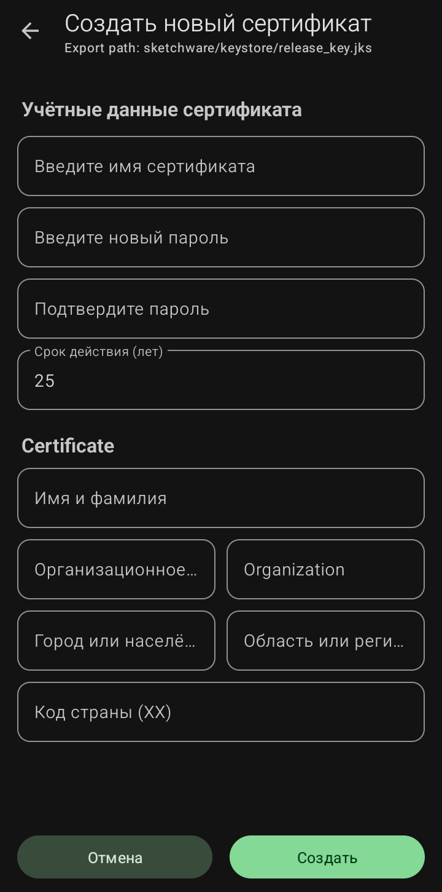

Создание нового сертификата (Ключ подписи)

Этот раздел находится в главном меню (пункт «Создать keystore»). Сертификат — это цифровая подпись, которая подтверждает, что приложение создано именно вами. Без него вы не сможете установить приложение на телефон или опубликовать его в магазине.
·
Учётные данные сертификата
·
Введите имя сертификата:
Любое название для вашего файла ключа (например, my_key).
·
Введите новый пароль:
Придумайте сложный пароль и обязательно запишите его. Если вы его забудете, вы не сможете обновлять свое приложение в будущем.
·
Подтвердите пароль:
Введите пароль еще раз.
·
Срок действия (лет):
Обычно ставится 25 или 50 лет. Это срок, в течение которого подпись будет считаться действительной.
·
Certificate (Данные сертификата):
·
Имя и фамилия:
Ваше имя или псевдоним.
·
Организация:
Название вашей организации или команды (можно оставить пустым или написать Individual).
·
Город или населённый пункт/ Область или регион:
Ваш город и регион.
·
Код страны (XX):
Двухбуквенный код вашей страны (например, RU для России, US для США).
· Кнопка «Создать»: После заполнения всех полей нажмите сюда, чтобы сгенерировать файл ключа.
Где хранится и где применяется
Сразу после создания Sketchware Pro сохраняет ваш ключ в строго определенную папку во внутренней памяти телефона:
/storage/emulated/0/sketchware/keystore/release_key.jks
По этому пути он и будет находиться всегда. Программа не создает его где-то еще, чтобы не потерять.
Что касается применения, то сертификат используется в одном единственном месте — при экспорте (сборке) вашего проекта. Когда вы нажимаете кнопку «Экспорт/Подпись» или «Sign/Export» в меню управления проектом, программа автоматически обращается к этому файлу и использует его, чтобы подписать итоговый APK-файл.
Как применить сертификат на практике.
Процесс выглядит так:
1. Создание: Вы заполняете все поля в окне «Создать новый сертификат» (имя, пароль, срок действия, ваши данные) и нажимаете «Создать».
2. Сборка проекта: Когда проект готов, вы заходите в меню проекта и выбираете пункт «Экспорт/Подпись» (или «Подписать APK»).
3. Подпись: В появившемся окне программа сама использует ваш сохраненный сертификат, чтобы подписать APK.
❗️ Важные предупреждения
Вот несколько ключевых вещей, которые нужно понять, чтобы не наделать ошибок.
· Почему это важно: Подпись — это гарантия того, что именно вы являетесь автором приложения. Если APK-файл не подписан, операционная система Android откажется его устанавливать.
· Пароль нужно помнить всегда: Сохраните свой пароль в надежном месте. Если вы его забудете, вы не сможете обновлять это приложение в будущем — система увидит разные подписи и заблокирует установку новой версии. Записывайте пароль сразу.
· Предупреждение о вирусах — это нормально: При установке вашего первого APK на телефон может появиться предупреждение от системы безопасности (например, «Приложение может быть опасным» или «Заблокировано Play Защитой»). Это не ошибка в вашем коде — так Android реагирует на новые и неизвестные подписи . После установки предупреждение больше не появится, и ваше приложение будет работать нормально .
· Переустановка на другое устройство: Если вы перенесете проект на другой телефон, вам нужно будет снова скопировать файл release_key.jks по указанному выше пути, иначе APK соберется с новым, тестовым ключом.
💡 Рекомендация для разработки
Возможно, вы столкнетесь с ситуацией, когда при тестировании приложения оно закрывается с ошибкой. Это часто происходит из-за того, что вы использовали «тестовую» подпись (которую программа предлагает по умолчанию).
Для тестов лучше всего использовать ваш собственный созданный сертификат. В Sketchware Pro есть настройка: перед началом сборки вы можете выбрать пункт «Подписать APK тестовым ключом» или указать свой собственный. Впоследствии, если возникнут проблемы с установкой, вы всегда сможете воспользоваться отдельным приложением-подписывателем (например, APK Signer) , но лучше решить этот вопрос сразу при создании вашего постоянного сертификата.
Sketchware Pro 7 · Автор: RasNikGal · © 2026